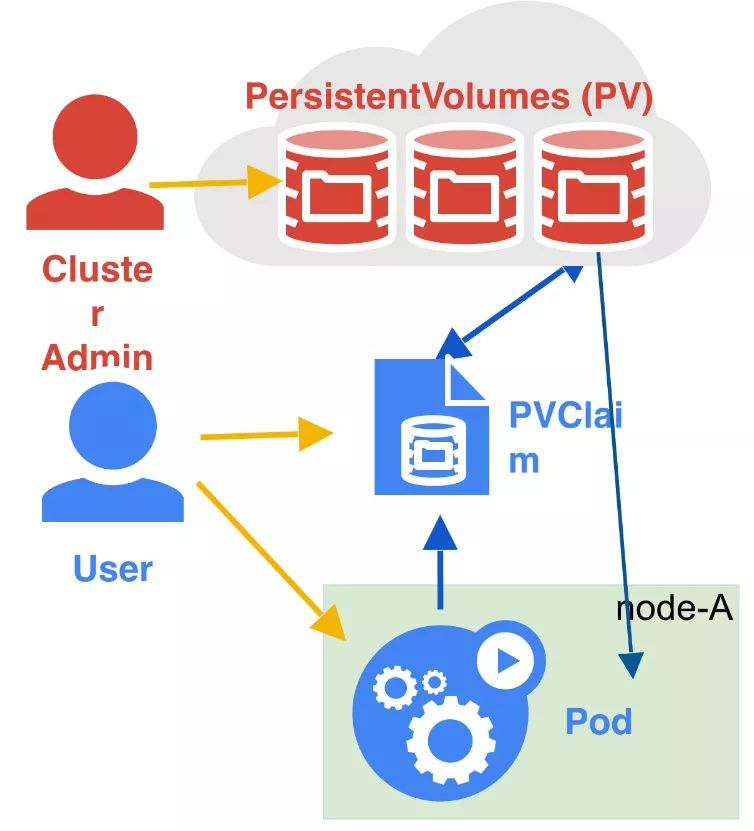
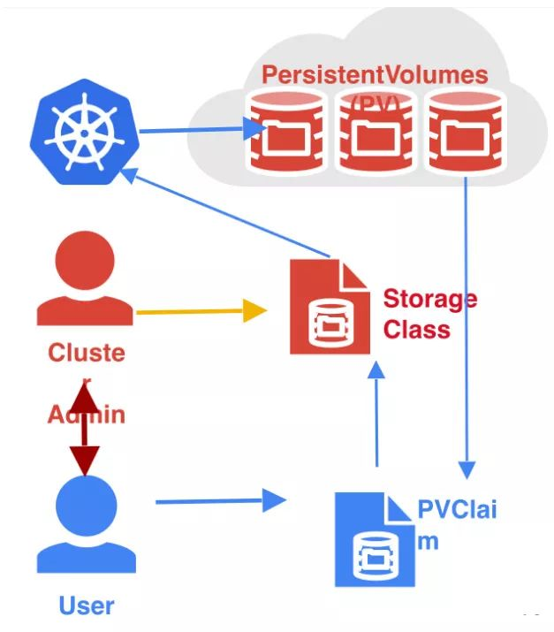
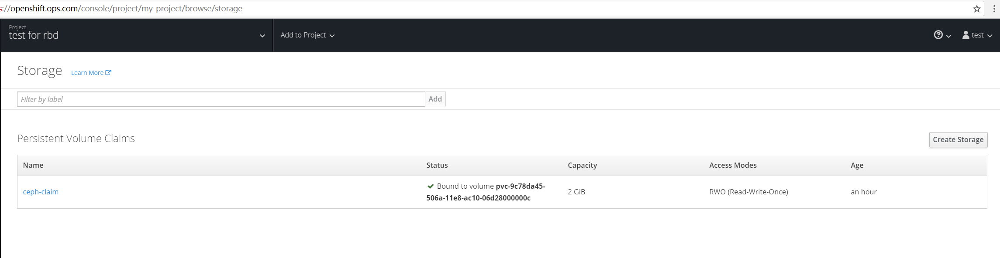
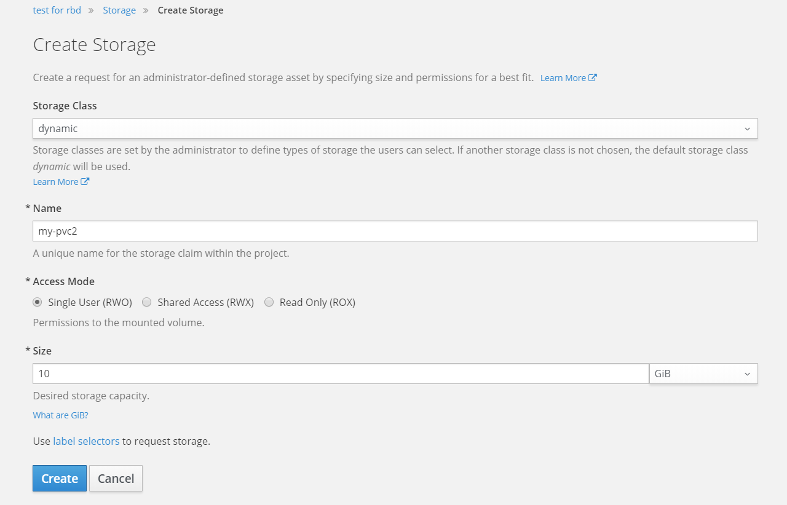
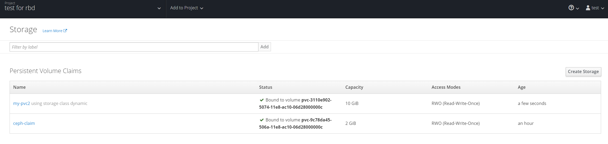
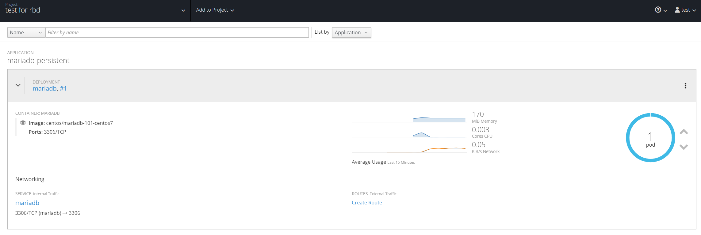
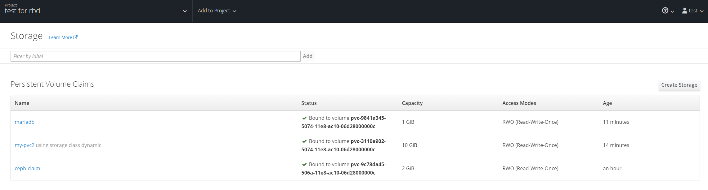

| 版本 | 日期 | 状态 | 修订人 | 摘要 |
|---|---|---|---|---|
| V1.0 | 2018-04-27 | 创建 | 开源方案 | 初始版本 |
openshift origin 用的是Kubernetes,在Kubernetes中使用两种API资源来管理存储，分别是PersistentVolume和PersistentVolumeClaim，下面分别介绍下这两种资源的概念：
PersistentVolume(简称PV)：由管理员设置的存储，它是集群的一部分。就像节点(Node)是集群中的资源一样，PV也是集群中的资源。它包含存储类型，存储大小和访问模式。它的生命周期独立于Pod，例如当使用它的Pod销毁时对PV没有影响。
PersistentVolumeClaim(简称PVC)： 是用户存储的请求，它和Pod类似。Pod消耗Node资源，PVC消耗PV资源。Pod可以请求特定级别的资源(CPU和MEM)。PVC可以请求特定大小和访问模式的PV。
集群管理员创建一些PV。它们带有可供集群用户使用的实际存储的细节，之后便可用于PVC消费。
注意： 这种方式请求的PVC必须要与管理员创建的PV保持一致，如：存储大小和访问模式，否则不会将PVC绑定到PV上。

当管理员创建的静态PV都不匹配用户的PVC时，集群可以使用动态的为PVC创建卷，此配置基于StorageClass。
PVC请求存储类(StorageClass)，且管理员必须要创建并配置该StorageClass，该StorageClass才能进行动态的创建。

可以看出动态PV更灵活,根据应用的需要按需申请存储空间的大小，动态创建rbd images 并挂载到容器上,里我们使用 Ceph RBD 动态创建PV(persistent volumes)
#安装ceph客户端
yum install centos-release-ceph-jewel.noarch -y
yum install -y ceph-common
#添加如下配置文件，否则会导致无法挂载rbd。
# cat /etc/origin/node/node-config.yaml
volumeConfig:
dynamicProvisioningEnabled: true
localQuota:
perFSGroup: null
# 重启计算节点
# systemctl restart origin-node
$ ceph osd pool create kube 1024
# 创建kube池子用户访问授权
$ ceph auth get-or-create client.kube mon 'allow r' osd 'allow class-read object_prefix rbd_children, allow rwx pool=kube' -o ceph.client.kube.keyring
# 当前目录下会生成keyring
# cat ceph.client.kube.keyring
[client.kube]
key = AQBmT+1a7WbLIxAADbOQ9EkVT6usAMn5wP5npw==
# ceph auth get-key client.admin | base64
QVFCdUx1eGFLWWhBTlJBQVFiQmxoUURpYVlNbDJsQS90SUl2Wnc9PQ==
apiVersion: v1
kind: Secret
metadata:
name: ceph-secret
namespace: kube-system
data:
#key值是由上一步获取的client.admin的key以base64加密的秘钥
key: QVFCdUx1eGFLWWhBTlJBQVFiQmxoUURpYVlNbDJsQS90SUl2Wnc9PQ==
type:
kubernetes.io/rbd
# oc create -f ceph-secret.yaml
secret "ceph-secret" created
# [root@openshift-master ~]# oc get secret ceph-secret -n kube-system
NAME TYPE DATA AGE
ceph-secret kubernetes.io/rbd 1 28s
# ceph auth get-key client.kube | base64
QVFCbVQrMWE3V2JMSXhBQURiT1E5RWtWVDZ1c0FNbjV3UDVucHc9PQ==
apiVersion: v1
kind: Secret
metadata:
name: ceph-user-secret
namespace: my-project
data:
key: QVFCbVQrMWE3V2JMSXhBQURiT1E5RWtWVDZ1c0FNbjV3UDVucHc9PQ==
type:
kubernetes.io/rbd
注意： 上述定义中 namespace: my-project 说明我们是要在my-project项目使用ceph 存储，如果要在其他项目使用 就改成其他项目名称
$ oc create -f ceph-user-secret.yaml
secret "ceph-user-secret" created
[root@openshift-master ~]# oc get secret ceph-user-secret -n my-project
NAME TYPE DATA AGE
ceph-user-secret kubernetes.io/rbd 1 18s
apiVersion: storage.k8s.io/v1beta1
kind: StorageClass
metadata:
name: dynamic
annotations:
storageclass.beta.kubernetes.io/is-default-class: "true"
provisioner: kubernetes.io/rbd
parameters:
# ceph monitor节点
monitors: 192.168.124.31:6789
# 能够在pool中创建images 的用户ID,默认是 `admin`.
adminId: admin
adminSecretName: ceph-secret
adminSecretNamespace: kube-system
# Ceph RBD pool. Default is `rbd`, but that value is not recommended
pool: kube
# Ceph client ID that is used to map the Ceph RBD image. Default is the same as `adminId`.
userId: kube
# The name of Ceph Secret for `userId` to map Ceph RBD image. It must exist in the same namespace as PVCs. It is required unless its set as the default in new projects.
userSecretName: ceph-user-secret
# oc create -f ceph-storageclass.yaml -n openshift
storageclass "dynamic" created
# cat ceph-claim.yaml
kind: PersistentVolumeClaim
apiVersion: v1
metadata:
name: ceph-claim
spec:
accessModes:
- ReadWriteOnce
resources:
requests:
storage: 2Gi
# oc create -f ceph-claim.yaml -n project
persistentvolumeclaim "ceph-claim" created
# oc get pvc
NAME STATUS VOLUME CAPACITY ACCESSMODES STORAGECLASS AGE
ceph-claim Bound pvc-9c78da45-506a-11e8-ac10-06d28000000c 2Gi RWO dynamic 1m
注意: pvc-9c78da45-506a-11e8-ac10-06d28000000c 这个就是持久卷请求动态创建的Ceph RBD PV
PVC 会在kube RBD pool中请求创建 RBD image 并映射成PV(/dev/rbdx)设备
# rbd list -p kube --name client.kube --keyring ceph.client.kube.keyring
kubernetes-dynamic-pvc-9c7efeac-506a-11e8-ac10-06d28000000c





再到ceph monitor节点查看下rbd images情况
[root@open-ceph ~]# rbd list -p kube --name client.kube --keyring ceph.client.kube.keyring
kubernetes-dynamic-pvc-31165112-5074-11e8-ac10-06d28000000c
kubernetes-dynamic-pvc-98513d20-5074-11e8-ac10-06d28000000c
kubernetes-dynamic-pvc-9c7efeac-506a-11e8-ac10-06d28000000c
这边文档讲述了如何在openshift中使用Ceph RBD作为持久化存储. 我们可以提供高性能存储(ssd),大容量等需求,最终实现 storage-as-a-service!